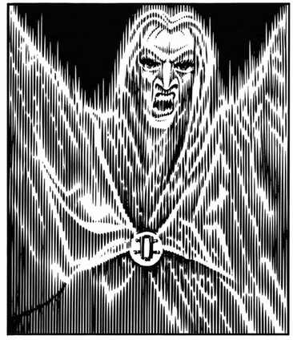

哀嚎之灵 · Groaning Spirit (Banshee)
 |
|
哀嚎之灵（女妖）是邪恶精灵女性的亡魂，极为罕见。它们重返世间伤害生者，只出没于荒凉乡野、荒原等地方。哀嚎之灵可以冰冷的触碰攻击，命中造成 1–8 点伤害；但更可怕的是它的哀号：3 寸范围内听见哀号的生物必须通过对抗魔法的豁免检定，否则当场死亡。看见哀嚎之灵也会使人恐惧，除非通过相应豁免检定。
哀嚎之灵每天只能哀号一次，而且只能在黑暗中。它不受魅惑、睡眠或定身法术影响，也不受寒冷与电击伤害。驱邪术可以杀死它。